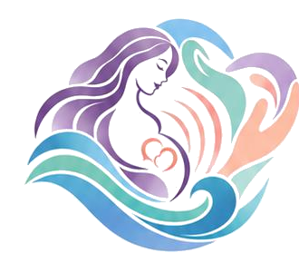

ECOS DO IX ENEON
I Encontro Regional de Atenção ao Parto e Nascimento do Norte Fluminense
Enfermagem Obstétrica no Norte Fluminense: desafios e caminhos para a atenção ao parto e Nascimento no SUS
4 e 5 de dezembro de 2026
Auditório do Bloco D (Térreo) · Cidade Universitária de Macaé / UFRJ Macaé
Promoção
Realização